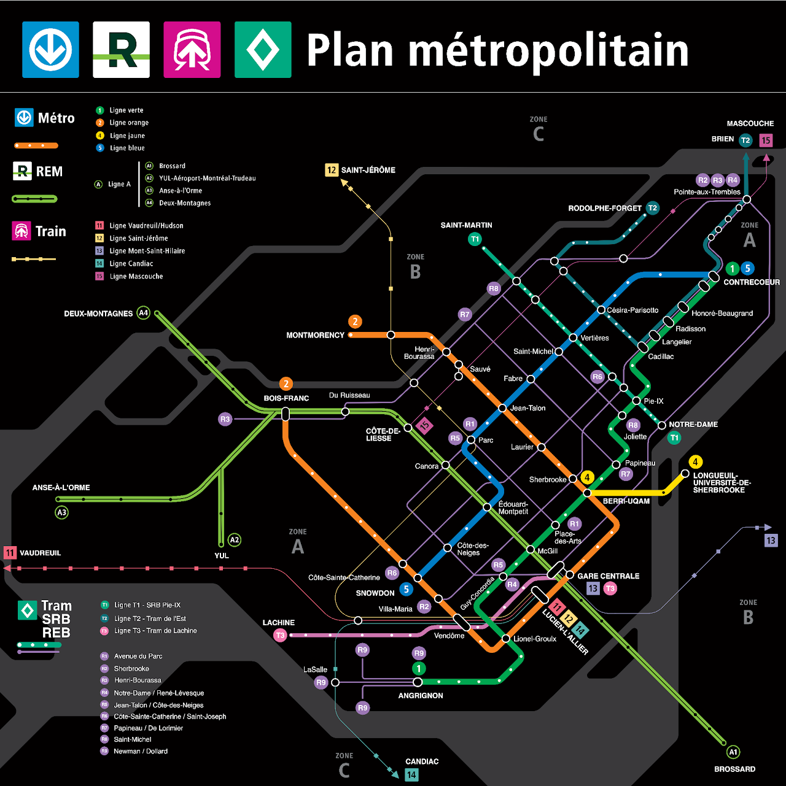
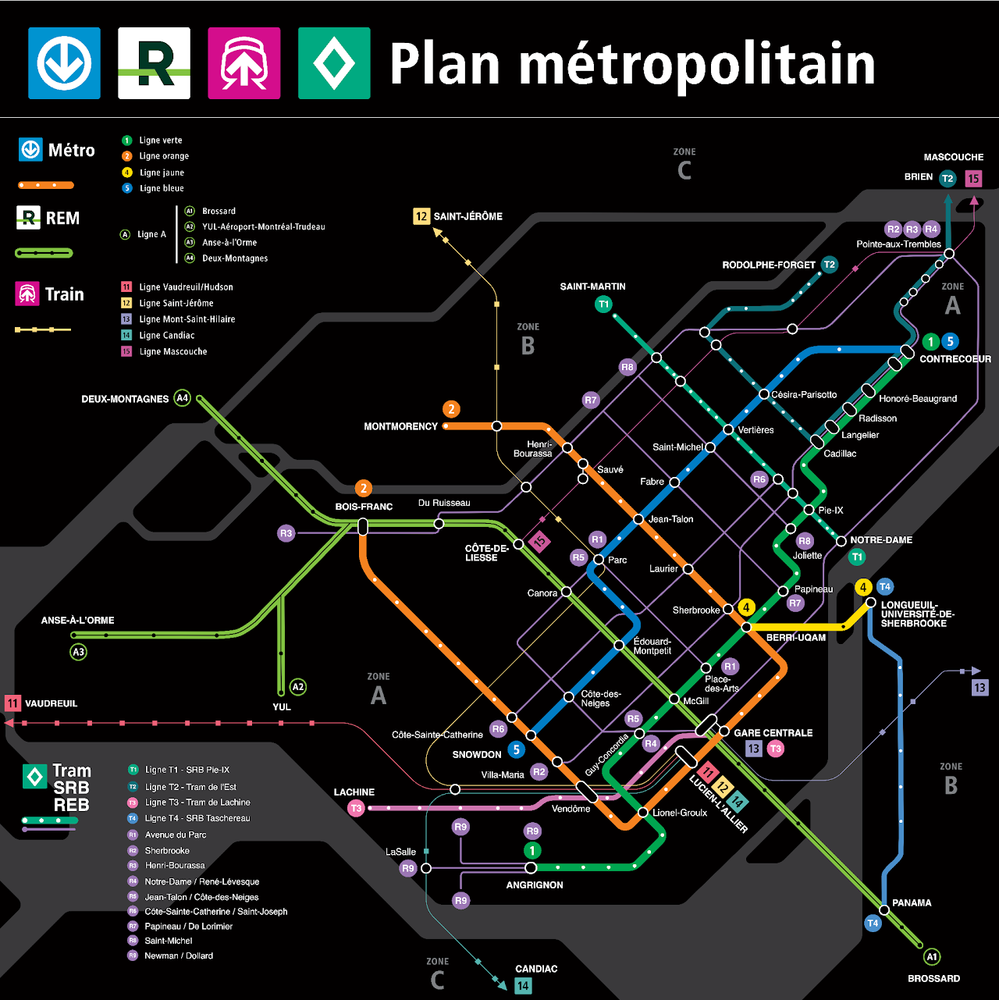

Dans la plateforme 2025 de Projet Montréal, deux prolongements de métro sont proposés, accompagnés d'un réseau express bus (REB) intégrant tramways et SRB à l'échelle métropolitaine.

Plan métropolitain montrant les prolongements de métro et le Réseau Express Bus proposés par Projet Montréal.
La plateforme 2025 de Projet Montréal propose deux prolongements du réseau de métro :

Plan de l'ARTM présentant notamment le SRB Taschereau sur la Rive-Sud de Montréal.
Le plan présente un réseau de transport lourd, de lignes fréquentes et de corridors rapides à l'échelle de la région métropolitaine de Montréal. Il intègre les lignes en service ou en construction, ainsi que les propositions de Projet Montréal, incluant le REB (Réseau Express Bus).